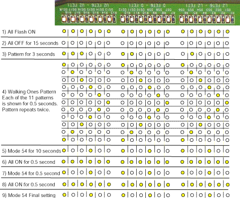

Operating Documentation
Direction 5224328-800, Rev# 5
Dir 5224328-800 LightSpeed 5.X HP60 Limited Access Service
Methods - Adv.
Operating Documentation |
| Last Revised on: | July 7, 2004 |
Whenever power is turned on to the DAS or a DAS Reset is performed, the DAS runs a series of Power-Up diagnostics. The sequence of tests is as follows.
DAS / DCB BOOT SEQUENCE AFTER POWER-ON OR RESET
MCU Initialization
RAM Test
Boot Flash CRC Test
Application CRC/size Test
Load the code into RAM (Application code from Flash)
FET control test
Start the Application code
Once Application code is booted successfully in the DCB, then the DCB establishes itself with the OBC and the DAS Converter boards in the following sequence of initialization and tests:
Platform Software and Hardware Driver initialization.
DCB Hardware self-tests.
Initialize Application Hardware and communication tasks.
Initializes Converter boards, 2 boards at a time, and does this 6 times. This is when the Converter board LEDs flash several short times in sequence from board 1 through 96. The Converter board initialization consists of:
Converter board access (Read/writes)
Initialization
Reading of EEPROM
Set of Temperature sensors
Setting of Offset Trim
Calibration
Fault line test
When all the converter boards are initialized, the DCB performs the following tasks:
Updates configure Tracker and version verification data
Reads Converter board temperature tests
Runs a quick data path test (2 views worth of data)
DCB exercises FET control lines. (Observable on LED’s)
Walking ones pattern.
Mode 54 pattern
All zeros pattern
Mode 54 pattern
All zeros pattern
Mode 54 pattern
Ready to Interface with OBC.
In an error condition, the error is reported to the DCB, if possible (depending on the type of fault). The DCB then relays the information to the ORP, and finally to the system error log. If the DCB is at fault and cannot communicate with the ORP, then a DAS Communication Error is logged.
Illustration 1: H16 DAS LED Self Test Sequence

The DAS test patterns shown in Illustration 1 are approximate times. The Field Engineer should look for LED’s that do not turn off or turn on.
Tests 1 through 2 will indicate if a control or communications failure within the DAS has occurred.
Board seating, DCB, Convertor card, chassis to chassis cabling, DC power are suspect.
Test 3 is an intermediate state between the communications and subsequent FET control checks. The pattern shown may not match exactly and does not indicate a failure if the LED pattern does not match as shown.
Tests 4 through 9 will indicate if a FET Control line failure has occurred.
DDIF short or open.
Bent pin on Interposer or debris in DDIF.
Chassis to Chassis cabling issue.
DCB board or slot issue.
Right, Center, or Left backplane issue.
Convertor card will never cause this type of fault.
FET control line failures require a good understanding of FET switching architecture. Note, it is possible to have a FET control fault with normal LED response. High impedance shorts or detector module faults can cause this. You can use DDC FET Override modes and Scan Analysis to help identify root cause.